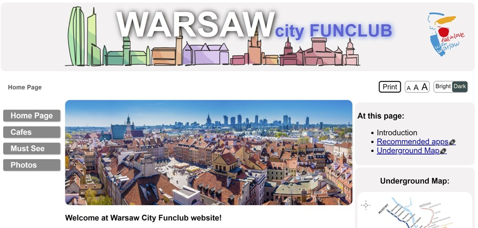

Web Development - final project - report.html
Krzysztof Kossinski
Introduction What is the essential story being told by your site and what type of structure did you choose to implement?
In searching for the topic of my final project website I considered topics which were interesting. I also considered if the website I createed could be useful to me or for someone else. I plan to extend this website even after the submission. My website is called Warsaw City Funclub
.
The main idea behind it is to gather useful information about interesting places in Polish capital. Very often in my time free of work I think what I could do during the day with my wife, children or alone. I have been living in Warsaw for around 10 years, however despite that it is nice to have somekind of list of places I like. My website contain list or actuall a webpage of major turistic attractions and interesting cafes. Both lists are relatively easy to expand.
Must see
page contains turistic atractions or interesitng places in general.Cafes
page contain list of cafes in the city center area. I spent a lot of time in different cafes as part of my study rutine. Sometimes it is not possible for me to learn at home as chldern age 5 yearrs and 1 month attract my attention too much. A solution is to study somwhere else.Gallery
contains photos of different parts of the city. In search of interesitn place to visit, seeing a photo can inspire where to go.

Inspiration State 3 things that have inspired you when creating your website (e.g. guest speakers, websites, artists, blogs).
The obvious inspiraton were Web Development module lectures and materials provided there. By studing the lectures and related materials I was able to create a basic structure and functionality of my website. The grid layout, hiding navigation menu, responsive design, progress bar were all inspired by the lectures. Also, use of the handlebars.js to create templates was inspired from the module videos. Sometimes I needed to find some supporting materials online. Mostly I used w3schools.com website and less often the Youtube. Thing which was completely outside of the lectures scope was implemetation of BEM (Block, Element, Modifier) - a component-based approach to web development
, where the idea behind it is to divide the user interface into independent blocks.
I found this concept very helpful in organising the html code and also how to name each html element. The element naming convention recommended by the BEM model significantly simplified for me the structure of the HTML and CSS.
Another inspiration were general principles of the design. One of the links provided in the reading section lead to the website 9 Guidelines & Best Practices for Exceptional Web Design and Usability where the following principles of the design were recommended:
- Simplicity
- Visual Hierarchy
- Navigability
- Consistency
- Responsivity
- Accessibility
- Conventionality
- Credibility
- User-Centricity
I tried to use a simple design, where it easy to find the content and to navigate. The look and functionality of my webpages is similar across whole website. The design is responsive. There are three levels of responsivity: mobile, tablet and desktop. I introduced accessibility options and layout of the site is conventional - there are no unusall layouts or elements. The information provided there is accurate and useful.
I also tried to follow the Flat Desig 2.0 principles, by using simple shapes and solid colours, while introducing only shadows to add a bit of the impresson of the third dimension.
Accessibility State 3 ways in which your site is accessible to those with different abilities and needs (for example those with visual impairment)
I introduced the following accesibility items:
- An option to select three different sizes of the font. It affects all the elements of the website. The font gets significantly larger when the largest option is selected.
- An option to change the display colour to the dark mode, paricularly useful during the night. Some elements changes in the same way, while other has specific style related to the dark mode on. All images dim slightly when dark mode in use.
- I used proper contrast between text and the backround items.
- Whitespaces are used to make website more readable and easier to navigate
- I used proper semantic structure of the website and used descriptive headings to each section to make it easier to navigate using screen reader.
- I provided alternative image desctiptions for the images in case the user uses screen reader or the image failed to download.
Usability State 3 ways in which you considered the usability of your site.
- By the design my webiste ment to be useful. As mentioned in the introduction I wanted this website to be useful to me or other users. The content there is relevant for the website topic and up to date. The content maybe interesting an useful for any user.
- Responsive design made the webiste useful on all range of the devices. It remains useful up to 400% zoom in in the browser. No element will overlap over the other and no text will go beyond its block element
-
It is possible to print each page directly from the webpage by clicking "Print" button. Each page has @media query especially for printing. Printed pages can easily be used instead of the electronic device.
Learning State 3 things you had to learn or find out to create your site. How did you achieve that?
- I had to learn form the external resources how to make common html for all pages to be stored in separate file. I found out that using handlebar's partials can be used to make this possible. Handlebars were discussed extensively in lectures, however it was not mentioned how to achive such effect. I tried to use w3 script for that task, however it did not work correctly for all elements.
-
Using mentioned in the introduction BEM model for naming the elements and style them. This was nowehere mentioned during the lectures. I had to spent significant amount of time studing avialable BEM documentation to implement it in useful way. BEM model made transfer of the elements across the website very easy. My previuos method made it very complicated.
-
I learned how to use flex property to position the elements in the container. It was particularly useful to mage the responsive Photo gallery at Photos webpage. I used for that the w3schools instructions and flex property description.
Evaluation I What aspects of your work do you think were particularly successful? Why?
Evaluation II What aspects of your work could be improved? How might you do things differently another time?
- In general I am happy how the website looks like and how it works. I was not able to prepare the last, 5th webpage. My plan was to introduce the Map page, where all the places in the data files could be displayed.
- Another improvement which I would like to introduce is ability to control the website using keyboard. At this stage did not introduced any code which would handle the keyboard inputs.
- Last important thing which I would like to consider is to provide somekind of backup page in case the user has JavaScript blocked. Now whole page rely on scripts to work correctly. I think that this is demanding part of Web Design to make website work even if the scripts are prevented from working.
-
I would also introduce handlebars precompiled files at my website to avoid compiling the code everytime I use any webpage.
References
What resources did you use in your work? List any sources of information, libraries, plugins, code or tools?